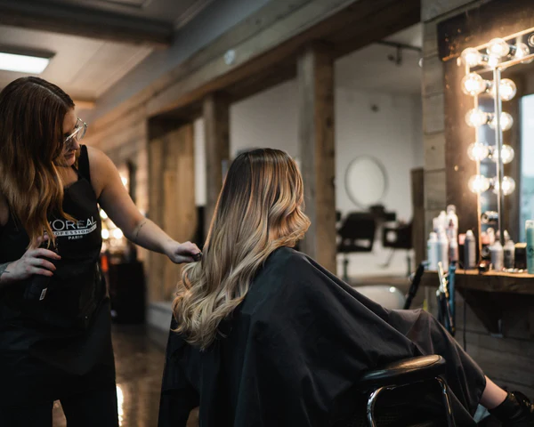

Balayage & couleur
De la lumière, de la profondeur et une repousse plus élégante.
La page femmes de Les Barbares mentionne déjà un univers de balayage, de coloration et de nuances plus fines. Cette nouvelle page le transforme en page de service SEO plus forte, avec un vocabulaire que l’on retrouve aussi chez des salons bien visibles du Grand Montréal : balayage doux, éclat naturel, diagnostic personnalisé, retouche racine, correction et entretien réfléchi.
Balayage douxSun-kissedColorationRetouche racine

Services couverts
Balayage, foilayage et coloration.
- Balayage subtil ou plus lumineux selon l’effet voulu.
- Approches plus soutenues comme demi-tête, tête complète ou placement plus ciblé.
- Coloration globale, gloss ou retouche racine selon le besoin d’entretien et de neutralisation.
Ce qui oriente le rendez-vous
Le diagnostic avant la technique.
- Historique de coloration, niveau de clarté actuel et objectif visuel.
- Texture, état de fibre et tolérance à l’entretien entre les rendez-vous.
- Plan réaliste pour garder un résultat lumineux sans promettre l’impossible.